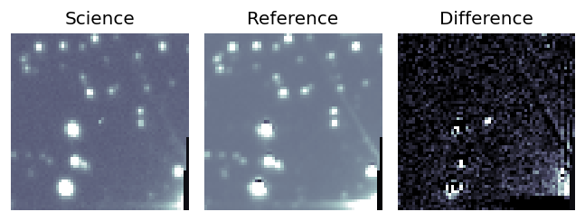
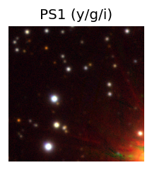
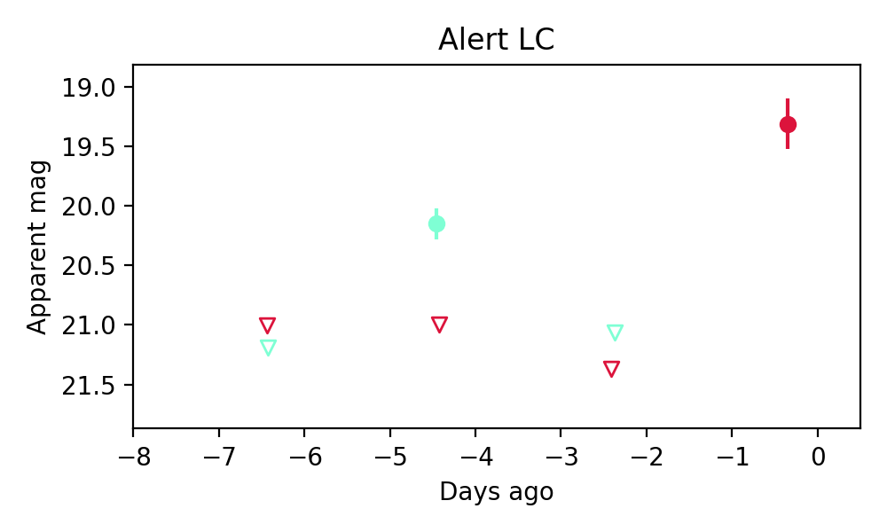
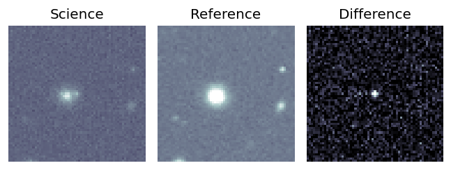
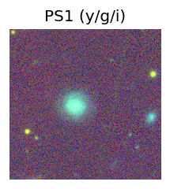
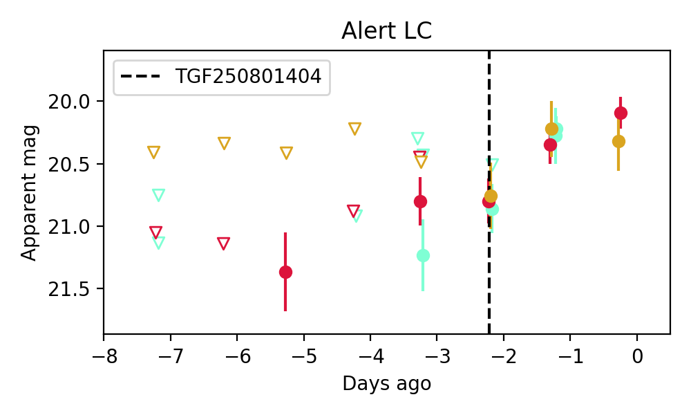

Candidate List 20250803Previous Day Next Day
Section 1: New Sources (age<1d) Section 2: Old (1-5d) sources observed last nightplaceholder
Section 2: Older Sources Observed Last Night (2)
0. ZTF25abgydin (Afterglow?) [Back to Top] [Share] [Trigger Swift] [Fritz] [Lasair]RA, Dec: 298.42422, 11.48964 19h53m41.81s, 11d29m22.72sGalactic (l, b): 50.40592, -8.23274 ext(g-r) = 0.299
PS1: 1 source in 3 arcsec Closest: d = 3.72 arcsec photoz=0.68+/-0.11 peak abs mag = -24.45
LegacySurvey: 0 sources in 3 arcsec

Extinction-corrected gr color:
From alerts: -1.15 +/- 99 mag
Rise Rate:
g: 0.53 mag/day
r: 1.0 mag/day
i: -99 mag/day
Fade Rate:
g: 0.44 mag/day
r: -99 mag/day
i: -99 mag/day
1. ZTF25abgyiwj (Afterglow?) [Back to Top] [Share] [Trigger Swift] [Fritz] [Lasair]RA, Dec: 0.20178, 7.7621 0h 0m48.43s, 7d45m43.57sGalactic (l, b): 101.77545, -53.01725 ext(g-r) = 0.054
SDSS (10 arcsec):Found SDSS phot-z: z=0.08; peak abs mag = -17.87
PS1: 0 sources in 3 arcsec
LegacySurvey: 1 sources in 3 arcsec Closest: d = 1.90 arcsec, 148.9 deg (east of north) photoz=0.03 (68% bounds 0.01, 0.12), type=EXP peak abs mag = -15.68 (68% bounds -13.21, -18.63)

Extinction-corrected gr color:
From alerts: -0.17 +/- 0.18 mag
Extinction-corrected gi color:
From alerts: -0.08 +/- 0.24 mag
Extinction-corrected ri color:
From alerts: -0.26 +/- 0.27 mag
Consistent with synchrotron, g-r>0!
Rise Rate:
g: 0.55 mag/day
r: 0.26 mag/day
i: -99 mag/day
Fade Rate:
g: -99 mag/day
r: -99 mag/day
i: -99 mag/day